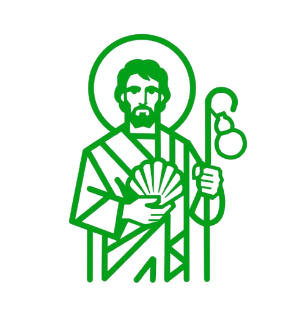

II Secção, 10 aos 14 anos
Exploradores
Imaginam, planeiam e vivem as suas próprias aventuras, à procura da Terra Prometida.
677 exploradores no Núcleo, em 2026

Os Exploradores imaginam, planeiam e vivem aventuras. Exploram lugares novos, enfrentam desafios e caminham em direção à Terra Prometida.

Organizam-se por patrulhas
Cada patrulha tem entre 4 e 8 elementos, juntos por afinidades e interesses. Escolhe um animal como Totem, que leva na sua bandeira. Assim todos têm um papel ativo, ajudam-se uns aos outros e aprendem a ser responsáveis.
Mística e simbologia
O Explorador reconhece Deus na sua vida, aceita a Aliança que Ele propõe e põe-se a caminho, como o povo do Antigo Testamento, à procura da paz e da felicidade da Terra Prometida.
- Flor-de-lis
- Vara
- Chapéu
- Cantil
- Estrela
Lei do Escuta
- A honra do Escuta inspira confiança.
- O Escuta é leal.
- O Escuta é útil e pratica diariamente uma boa ação.
- O Escuta é amigo de todos e irmão de todos os outros Escutas.
- O Escuta é delicado e respeitador.
- O Escuta protege as plantas e os animais.
- O Escuta é obediente.
- O Escuta tem sempre boa disposição de espírito.
- O Escuta é sóbrio, económico e respeitador do bem alheio.
- O Escuta é puro nos pensamentos, nas palavras e nas ações.
Princípios
- O Escuta orgulha-se da sua fé e por ela orienta toda a sua vida.
- O Escuta é filho de Portugal e bom cidadão.
- O dever do Escuta começa em casa.
Recursos pedagógicos
Para dirigentes da II Secção.
- Sistema de Progresso Ficheiro por ligar
- Especialidades Ficheiro por ligar
- Caderno de Pista II Secção Ficheiro por ligar
- Mapa de Pista de Patrulha Ficheiro por ligar
- Stickers para Mapa de Pista Individual Ficheiro por ligar
- Mapa de Pista Individual II Secção Ficheiro por ligar
- Ferramenta de Início de Pista e de Observação Contínua XLSX Descarregar